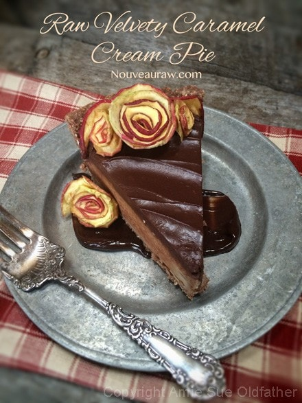
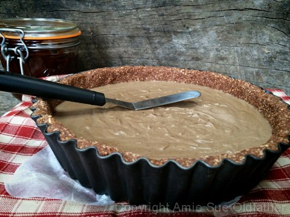
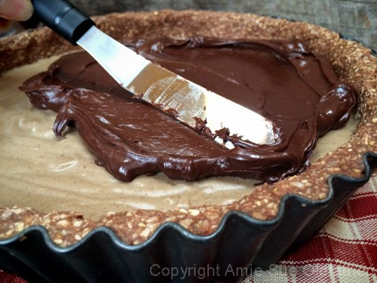
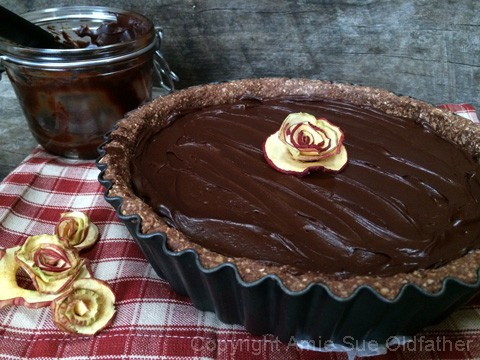
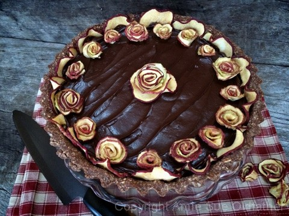
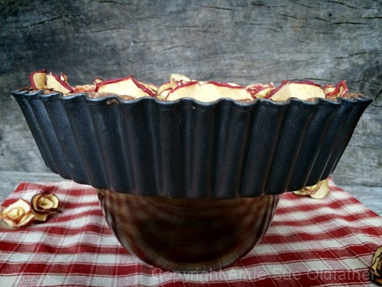
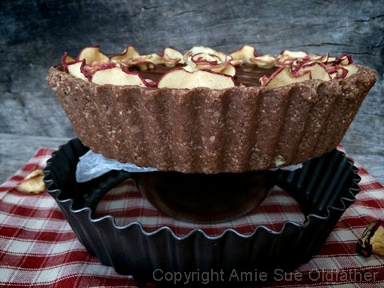
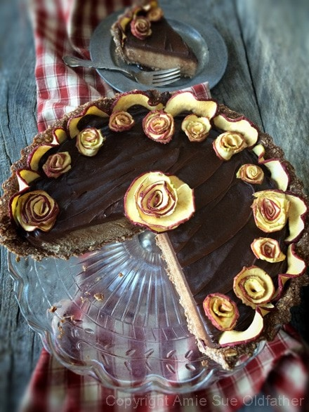
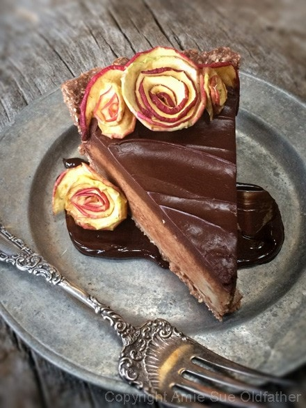
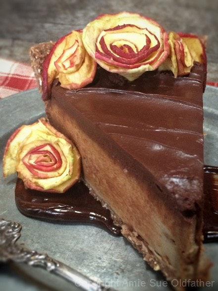

Velvety Caramel Cream Pie

~ raw, vegan, gluten-free ~
Well, shiver-me-timbers… this really isn’t a cream pie, it’s a dream pie!
Today, I want to showcase sunflower lecithin (soy-free). I use it often, especially in desserts and I often get asked if it can be substituted or omitted. I don’t recommend either. It plays a vital role texturally and nutritionally.
In a recipe, such as this one, it is used as an emulsifier and thickener. There are many brands on the market, and I suggest that you do your research watching out for GMO brands.
After reading, Googling, reading, bookmarking, reading, napping, reading… I found myself very impressed with the Lekithos brand. Please note, that I don’t get any kickback from this company for recommending them. This is my personal choice, and I just wanted to share it with you.
“This sunflower lecithin is certified organic by Baystate Organic Certifiers and features the USDA Organic Logo. It presents an allergen-free alternative to organic liquid soy lecithin. This product is obtained via mechanical extraction from organic sunflower seeds, resulting in pure lecithin without the use of chemical solvents such as hexane or acetone.
Lekithos organic sunflower lecithin is Non-GMO, solvent-free, soy-free, gluten-free, and vegan. The most common applications are as a dietary supplement ‘as is’ (intake as directed by your physician or healthcare provider), in recipes for shakes, smoothies, sauces, dressings, or any product requiring an emulsifier.
Sunflower Lecithin is rich in Phosphatidylcholine (PC), Phosphatidylinositol (PI), Phosphatidylethanolamine (PE) and Omega-6 (Linoleic Acid), which are considered beneficial to the brain and nervous system.” (source) Let’s break down what some of these items are.
- Phosphatidylcholine (PC)
- Helps to process fats and to support cell membranes.
- It is very high at birth, particularly in brain tissue, and declines over time as part of the normal aging process. Consuming dietary supplements high in PC aid the natural level in the cells and help minimize the age-related decline*.
- Phosphatidylinositol (PI)
- It is an important lipid abundant in brain tissue and is present in all tissues and cell types.
- Phosphatidylinositol is usually the phospholipid with the smallest presence, however, Lekithos Sunflower Lecithin has an equal amount of PC and PI.
- Phosphatidylethanolamine (PE)
- It is usually the second most abundant phospholipid in animal and plant lipids and is a key building block of membrane bilayers.
- It is found in nervous tissue such as the brain, nerves, neural tissue, and the spinal cord.
- Linoleic Acid (LA)
- It is an Omega-6 essential polyunsaturated fatty acid, which is abundant in many vegetable oils such as sunflower oil.
- Linoleic Acid is vital to proper health and aids in wound healing.” (source)
I know that was quite lengthy, but I really wanted to share with you why I use it. Now, back to the pie… I am somewhat embarrassed to say that it took 5 days to get a decent photo of this pie. Mother Nature was working against me with her cloudy, rainy days. Whereas I do appreciate and enjoy the rain, the clouds sucked up all my natural light for photo taking. I have camera lights, but I don’t know how to use them. If Mother Nature keeps this up, I just might have to learn, they do work well for quilting though. hehe
Though I must add that Bob enjoyed this process because with each attempt, he ended up with a beautifully plated piece of pie to eat after I finished trying to get a picture of it. The other day we had our friend Heith here to do some sheetrock work for us. He had a slice for his mid-morning snack. He even took a picture and texted it to his wife, he went home with two pieces in hand to share with her. Hmm, I best check in with her and make sure she got some. hehe
Update: This pie is so creamy, and even 8 days later, the last few pieces were just as good as the first one!

Ingredients:
Yields 10″ deep dish tart pan
Crust:
- 1 cup rolled gluten-free oats, soaked & dehydrated
- 1 cup raw almonds, soaked & dehydrated
- 1 1/4 cups shredded coconut
- 1/4 cup raw cacao powder
- 1/4 tsp sea salt
- 1/4 cup raw coconut butter, softened
- 1/2 cup water
- 3 Tbsp maple syrup
Filling: yields 4 cups
- 1 1/4 cups caramel sauce
- 2 1/2 cups diced banana
- 1/2 cup raw coconut butter
- 2 Tbsp powdered sunflower lecithin
Ganache:
Preparation:
Crust:
- Line the base of the pan with plastic wrap or give it a light coating of coconut oil. This will aid in removing the cake from the base.
- Place the oats and almonds in the food processor, using the “S” blade, and process until crumbly.
- If you wish to make this crust grain-free, replace the oats with more almonds.
- Add in the coconut, cacao, and salt. Pulse just a few times to mix.
- Pour in the melted coconut butter, water, and maple syrup. Process until the batter sticks together when pinched.
- Maple syrup ~ This isn’t a raw ingredient but we like to use it due to the health benefits and we feel it is ok to use occasionally (moderation is always the key) You can use raw coconut nectar or stevia.
- Loosely place the crust batter around the bottom of the pan.
- With a gentle hand, drag some of the batter up along the sides of the pan.
- Complete the edge first, then the base.
- Press the batter in firmly but evenly.
- Set aside while you prepare the filling.
Filling:
- In the blender, combine the caramel sauce, banana, and coconut butter. Process until creamy.
- Bananas ~ The taste of bananas isn’t strong in this recipe but if you don’t care for bananas, try using young Thai coconut flesh in its place.
- Add lecithin and blend just long enough to incorporate it.
- Pour the filling into the crust, cover, and place in the fridge over-night to chill and firm up.

After the filling is firm, spread the ganache on top.

Decorate as you see fit!

For decoration, I used dried apple flowers. They are very easy to make. Core the apple,
but don’t peel so be sure to use organic apples. Slice into thin rings. I used a 1.5 mm
blade on my mandolin. Place on the mesh sheet that comes with the dehydrator and dry for
about 4 hours (at 115), or until they are still pliable and a bit rubbery feeling. Cut one side the ring
and start to coil the apple around itself, nice and tight. Lay back on the mesh sheet
and dry for another 2-4 hours. They don’t have to be crunchy hard, I prefer them
moist for this dessert.

This is how I remove the base from the tart pan when ready to serve… place the pan
on top of a sturdy bowl that is smaller in diameter than the opening of the tart pan.

Then gently, press in a downward motion on the ring of the tart pan until it slides off.


For a little extra decor… I swiped some Raw Chocolate Ganache across the plate.

Getting up close and personal. :) Enjoy!

This website is not intended to provide medical advice. All content, including text, graphics, images, and information available on this site is for general informational, entertainment and educational purposes only. The content is not intended to be a substitute for professional diagnosis or treatment. The author of this site is not responsible for any adverse effects that may occur from the application of the information on this site. You are encouraged to make your own health care decisions, based on your research and in partnership with a qualified healthcare professional.
© AmieSue.com